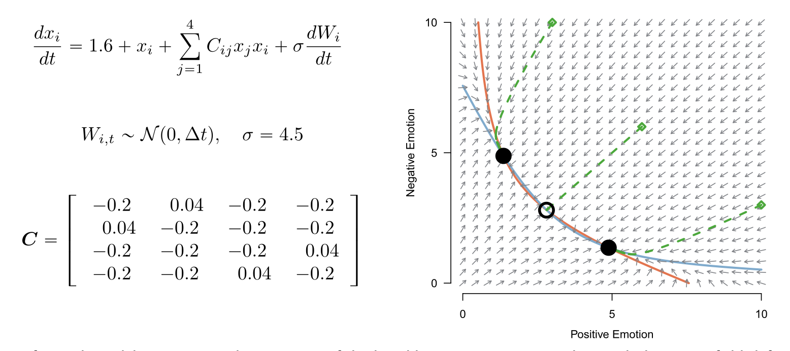

110 Recuperare le dinamiche intra-personali dalle serie temporali psicologiche
Prerequisiti
- Leggere Recovering within-person dynamics from psychological time series di Haslbeck & Ryan (2022).
Concetti e competenze chiave
- Comprendere come la specificazione inaccurata di un modello statistico possa influenzare l’analisi e le inferenze sui dati psicologici.
- Conoscere le caratteristiche di base diversi tipi di modelli di serie temporali (es. HMM, VAR(1), TVAR(1)).
- Distinguere tra le caratteristiche globali del sistema (es. bistabilità) e le caratteristiche locali (es. interazioni a breve termine) e capire come possono essere influenzate dall’errata specificazione.
- Comprendere l’importanza della frequenza di campionamento nei dati longitudinali e come essa influisce sulla capacità di catturare le dinamiche del sistema.
- Sapere come le simulazioni possono essere utilizzate per testare l’adeguatezza dei modelli statistici e fare inferenze sui sistemi psicologici sottostanti.
- Apprendere come la conoscenza teorica del sistema può guidare la scelta e l’adeguatezza del modello, migliorando la precisione delle inferenze.
Introduzione
Nei capitoli precedenti abbiamo esaminato situazioni in cui i dati sono stati simulati utilizzando un meccanismo generativo che corrispondeva esattamente al modello statistico impiegato per l’analisi e per fare inferenze sui parametri. In altre parole, ci siamo concentrati su una situazione ideale in cui il modello statistico rispecchiava perfettamente il processo che ha generato i dati. In tali circostanze, abbiamo osservato come un modello statistico bayesiano possa fornire stime accurate dei parametri, a condizione che la dimensione del campione sia sufficientemente grande e che il rapporto segnale/rumore sia adeguato.
Tuttavia, non abbiamo ancora affrontato una questione cruciale: nel mondo reale, al di fuori delle simulazioni, il ricercatore non conosce il meccanismo generatore dei dati. Di conseguenza, il modello statistico utilizzato sarà generalmente soggetto a un errore di specificazione. Cosa accade in questi casi? È possibile fare inferenze “poco distorte” sulle caratteristiche del fenomeno osservato anche senza avere informazioni affidabili sul meccanismo generativo? Dopotutto, se conoscessimo questo meccanismo, la ricerca non sarebbe necessaria.
Per esplorare queste problematiche nel contesto di misurazioni intensive all’interno dei soggetti, discuteremo il lavoro di Haslbeck & Ryan (2022).
110.1 La Ricerca Idiografica
L’articolo “Recovering Within-Person Dynamics from Psychological Time Series” di Haslbeck & Ryan (2022) affronta un tema di crescente interesse nella ricerca psicologica: la modellazione idiografica. Questo approccio si concentra sullo studio delle dinamiche interne alle persone, in contrasto con le inferenze basate su dati trasversali. La modellazione idiografica risponde alle preoccupazioni sulla validità delle inferenze fatte dai dati trasversali per comprendere i processi intra-personali e sfrutta la crescente disponibilità di dati longitudinali intensivi.
Haslbeck & Ryan (2022) sottolineano che l’obiettivo principale della ricerca in questo campo non è semplicemente adattare un modello statistico ai dati di serie temporali, ma approfondire la comprensione teorica delle dinamiche intra-personali. Tuttavia, per fare inferenze su questi dati, è necessario affrontare due sfide fondamentali: il problema della specificazione errata del modello e la frequenza di campionamento insufficiente.
L’errata specificazione del modello si verifica quando il modello utilizzato per analizzare i dati non corrisponde perfettamente alla complessità del vero sistema. Questo può portare a difficoltà nel fare inferenze accurate sui parametri del sistema reale. D’altra parte, la frequenza di campionamento, ovvero quanto spesso i dati vengono raccolti, deve essere sufficientemente alta per catturare le dinamiche di interesse. Se la frequenza è troppo bassa, le dinamiche non saranno ben rappresentate nei dati raccolti e, di conseguenza, non potranno essere inferite correttamente dal modello di serie temporali.
Per illustrare queste problematiche, Haslbeck & Ryan (2022) adottano un approccio di simulazione. Definiscono un determinato modello come il sistema reale e tentano di recuperarlo utilizzando la metodologia tipica della letteratura psicologica sulle serie temporali. Questo approccio consente di comprendere meglio i limiti della modellazione attuale.
110.2 Un Sistema Dinamico Bistabile per le Dinamiche Emotive
Haslbeck & Ryan (2022) scelgono un modello giocattolo (toy model) per le dinamiche delle emozioni, caratterizzato dalla capacità di passare tra due stati emotivi stabili. Questo modello, basato sul modello di Lotka-Volterra, è stato selezionato per due motivi principali: in primo luogo, la bistabilità è una proprietà frequentemente teorizzata nei fenomeni psicologici, e in secondo luogo, nonostante la sua semplicità, il modello è abbastanza complesso da rendere i modelli di serie temporali comunemente usati in psicologia inesatti o specificati erroneamente.
Il modello utilizzato si basa su equazioni differenziali stocastiche che descrivono come quattro variabili emotive - due con valenza positiva (Felice e Contento) e due con valenza negativa (Ansioso e Triste) - cambiano nel tempo. Queste equazioni includono termini che rappresentano sia gli effetti lineari principali che gli effetti di interazione tra le variabili, con interazioni rinforzanti tra emozioni della stessa valenza e soppressive tra emozioni di valenza opposta.
Il modello di Lotka-Volterra per le specie concorrenti, noto anche come equazioni di Lotka-Volterra, è un sistema di equazioni differenziali utilizzato per descrivere le dinamiche di popolazioni di specie che interagiscono in un ecosistema. Questo modello fu originariamente sviluppato per descrivere la dinamica predatore-preda, ma può essere esteso per rappresentare competizione tra specie per risorse limitate.
Nel contesto delle specie concorrenti, il modello di Lotka-Volterra è usato per descrivere come due specie che competono per la stessa risorsa limitata influenzano reciprocamente le loro popolazioni. Le equazioni del modello hanno la forma:
\[ \begin{align*} \frac{dx_1}{dt} &= r_1 x_1 \left(1 - \frac{x_1 + \alpha x_2}{K_1}\right), \\ \frac{dx_2}{dt} &= r_2 x_2 \left(1 - \frac{x_2 + \beta x_1}{K_2}\right), \end{align*} \]
dove:
- \(x_1\) e \(x_2\) rappresentano le popolazioni delle due specie concorrenti.
- \(r_1\) e \(r_2\) sono i tassi di crescita intrinseci delle specie.
- \(K_1\) e \(K_2\) sono le capacità portanti (carrying capacities) dell’ambiente per ciascuna specie.
- \(\alpha\) e \(\beta\) rappresentano i coefficienti di competizione, che misurano l’impatto della competizione tra le specie.
Nel lavoro di Leemput et al. (2014), il modello di Lotka-Volterra viene adattato per descrivere le dinamiche delle emozioni. Nel contesto delle dinamiche delle emozioni, le “specie” del modello di Lotka-Volterra sono analoghe a diverse emozioni che possono competere per l’influenza sullo stato emotivo complessivo di un individuo. Le equazioni del modello definiscono come ciascuna emozione cambia nel tempo in base alle interazioni con le altre emozioni. Ogni equazione ha un termine stocastico che rappresenta fluttuazioni casuali, simile a un processo di Wiener, che simula le perturbazioni ambientali o gli stimoli esterni.
Il modello giocattolo usato da Haslbeck & Ryan (2022) per le dinamiche delle emozioni, basato sul modello di Lotka-Volterra, considera quattro variabili che rappresentano diverse emozioni:
- Emozioni con valenza positiva: Felice (\(x_1\)) e Contento (\(x_2\)).
- Emozioni con valenza negativa: Ansioso (\(x_3\)) e Triste (\(x_4\)).
Le equazioni differenziali del modello definiscono come ciascuna emozione cambia nel tempo in base alle interazioni con le altre emozioni. Ogni equazione ha un termine stocastico che rappresenta fluttuazioni casuali, simile a un processo di Wiener, che simula le perturbazioni ambientali o gli stimoli esterni.
Ecco il testo corretto secondo le convenzioni tipografiche italiane:
Le equazioni che descrivono le dinamiche del sistema emotivo sono:
\[ \frac{dx_i}{dt} = 1{.}6 + x_i - 0{.}2 x_i^2 + \sum_{j} C_{ij} x_i x_j + \sigma dW_i(t), \]
dove:
- la costante 1.6 assicura che le variabili emotive assumano valori positivi;
- il termine lineare \(x_i\) rappresenta l’effetto diretto di ogni emozione su sé stessa;
- il termine quadratico \(-0{.}2 x_i^2\) stabilizza l’emozione attorno a un livello moderato, evitando che cresca indefinitamente;
- la matrice di interazione \(C\) definisce come le emozioni interagiscono tra di loro. I termini positivi nella matrice \(C\) rappresentano interazioni di rinforzo tra emozioni della stessa valenza, mentre i termini negativi rappresentano effetti soppressivi tra emozioni di valenza opposta;
- il termine stocastico \(\sigma dW_i(t)\) introduce rumore casuale, rappresentando le fluttuazioni ambientali.
Il sistema dinamico risultante è bistabile, il che significa che può stabilizzarsi in due stati emotivi stabili distinti: uno stato “sano” con elevate emozioni positive e basse emozioni negative, e uno stato “non sano” con elevate emozioni negative e basse emozioni positive. Questi stati sono punti fissi stabili del sistema, dove le emozioni si stabilizzano. Tuttavia, a causa del termine stocastico, il sistema può occasionalmente “saltare” da uno stato stabile all’altro, simulando transizioni emotive tra stati sani e non sani.
Nella Figura 1 dell’articolo di Haslbeck & Ryan (2022), tale modello è visualizzato insieme alle equazioni differenziali stocastiche e ad un campo vettoriale che illustra come le variabili emotive cambiano in base ai loro valori attuali. I punti solidi nel campo vettoriale rappresentano punti fissi stabili, mentre il punto vuoto rappresenta un punto fisso instabile. Le linee solide mostrano dove le derivate delle emozioni positive e negative sono zero, e le linee tratteggiate illustrano potenziali traiettorie del sistema attraverso il campo vettoriale.

Se dal modello rimuoviamo la componente stocastica \(\sigma dW_i(t)\), che rappresenta un processo di Wiener, allora, indipendentemente dalla posizione iniziale dell’emozione, il sistema finirà per stabilizzarsi in uno dei punti fissi stabili. Tuttavia, poiché il sistema è determinato anche dal termine stocastico, se le fluttuazioni sono abbastanza grandi da allontanare l’emozione corrente da uno dei punti fissi stabili, è possibile che il sistema raggiunga il punto fisso instabile, provocando un’inversione dello stato emotivo.
In sintesi, il modello di Lotka-Volterra è stato adattato da Haslbeck & Ryan (2022) per esplorare le dinamiche delle emozioni, utilizzando l’interazione tra diverse emozioni come base per modellare cambiamenti complessi nello stato emotivo di un individuo. L’approccio di Haslbeck & Ryan (2022) prevede di simulare dati di serie temporali utilizzando il modello descritto e quindi tentare di recuperare le caratteristiche del sistema sottostante tramite strumenti analitici tipici della ricerca psicologica.
110.3 Generazione della Serie Temporale
Per generare i dati delle serie temporali, Haslbeck & Ryan (2022) utilizzano una soluzione numerica del modello su un intervallo di tempo di due settimane, con l’unità di tempo interpretata come un minuto. I dati generati sono stati successivamente sottocampionati 10 volte al minuto, ottenendo così una serie temporale con 201600 misurazioni. Questa serie temporale viene considerata “ideale” poiché è stata misurata con un’alta frequenza di campionamento, non presenta errori di misurazione né valori mancanti, e mostra frequenti cambiamenti tra stati stabili.
110.4 Caratteristiche Qualitative del Sistema
Haslbeck & Ryan (2022) distinguono tra le caratteristiche locali e globali del sistema definito dalle equazioni differenziali.
- Le caratteristiche locali includono gli effetti di soppressione tra valenze e gli effetti di rinforzo all’interno delle valenze, la dimensione relativa di questi effetti, e l’indipendenza dei parametri nel tempo e dalle variabili esterne.
- Le caratteristiche globali comprendono la bistabilità del sistema, la posizione dei punti fissi stabili, la variabilità attorno a questi punti, e la frequenza delle transizioni tra stati.
110.5 Il Problema dell’Errata Specificazione
Per analizzare i dati simulati, Haslbeck & Ryan (2022) utilizzano diversi modelli comunemente utilizzati in psicologia, come il modello di Markov nascosto (HMM), il modello autoregressivo vettoriale di ordine 1 (VAR(1)) e un’estensione del VAR(1) chiamata Threshold VAR(1) (TVAR(1)). Ognuno di questi modelli presenta limitazioni che possono portare a un’errata specificazione.
Haslbeck & Ryan (2022) si chiedono in che misura l’errata specificazione di questi modelli comprometta il recupero delle caratteristiche globali e locali del sistema a partire dai dati del campione.
110.5.1 Caratteristiche Globali
Haslbeck & Ryan (2022) mostrano che, utilizzando un campionamento ad alta frequenza, è possibile recuperare le caratteristiche globali del sistema anche in presenza di errata specificazione.
Specificamante, le rappresentazioni grafiche e le statistiche descrittive vengono utilizzate per descrivere accuratamente queste caratteristiche. Ad esempio, analizzando gli istogrammi delle variabili emotive, si osserva che ogni variabile presenta una distribuzione bimodale, suggerendo la presenza di due stati stabili. Le distribuzioni sono centrate approssimativamente intorno ai valori di 1.6 e 4.8, con una maggiore varianza nella distribuzione dei valori più alti. Questi istogrammi, insieme alle relazioni bivariate tra le variabili emotive, confermano la bistabilità del sistema. Le rappresentazioni grafiche mostrano inoltre che il sistema passa frequentemente tra due stati: uno con emozioni positive alte e negative basse, e uno con emozioni negative alte e positive basse.
Per quel che riguarda l’inferenza, gli autori hanno utilizzato il pacchetto depmixS4 di R, un software specifico per l’analisi di modelli di Markov nascosti (HMM), per stimare vari parametri del modello, come le medie e le deviazioni standard delle distribuzioni per i diversi stati del sistema.
Componenti \(k_1\) e \(k_2\): Rappresentano i due stati stabili che il sistema può assumere. Il modello HMM è stato utilizzato per stimare le caratteristiche di ciascuno di questi stati, come le medie e le deviazioni standard delle emozioni associate.
Matrice di transizione \(\hat{M}\): Questa matrice rappresenta le probabilità di transizione tra i due stati \(k_1\) e \(k_2\). Essa indica la probabilità che il sistema rimanga nello stesso stato o passi all’altro stato in ogni intervallo temporale.
L’analisi tramite modelli di Markov nascosti ha dimostrato di essere efficace nel recuperare le caratteristiche qualitative globali del sistema, anche quando il modello è specificato in modo errato.
- Stima delle Medie e delle Deviazioni Standard:
- L’HMM è riuscito a stimare accuratamente le medie e le deviazioni standard per i due stati del sistema, \(k_1\) e \(k_2\). Questi stati rappresentano due condizioni stabili nel sistema simulato: uno stato “sano” con emozioni positive alte e emozioni negative basse, e uno stato “non sano” con emozioni negative alte e emozioni positive basse. Le medie stimate per gli stati sono molto vicine ai valori reali dei punti fissi stabili del sistema simulato, indicando una buona capacità del modello HMM di rappresentare la distribuzione dei dati in ciascun stato.
- Matrice di Transizione:
- La matrice di transizione stimata dall’HMM (\(\hat{M}\)) mostra valori elevati sulla diagonale (circa 0.9996), il che suggerisce che il sistema tende a rimanere nello stesso stato per periodi prolungati, e valori molto bassi fuori diagonale (circa 0.0004), indicando una bassa probabilità di transizione tra stati. Questi valori riflettono il comportamento osservato nel sistema simulato, dove le transizioni tra stati sono rare.
Anche con un’errata specificazione del modello (poiché il sistema reale include dinamiche non lineari non perfettamente catturate da un semplice HMM), Haslbeck & Ryan (2022) mostrano che l’analisi con l’HMM è stata in grado di recuperare accuratamente le caratteristiche qualitative globali del sistema. Questo include la natura bistabile del sistema (due stati stabili), le posizioni approssimative dei punti fissi (medie dei componenti) e la frequenza delle transizioni tra stati.
110.5.2 Caratteristiche Locali
Tuttavia, anche senza entrare nei dettagli, possiamo affermare che le inferenze sulle caratteristiche locali del sistema, come le interazioni precise e le dinamiche a breve termine tra le variabili, possono risultare compromesse a causa dell’errata specificazione. In effetti, in presenza di errata specificazione, nessuno dei modelli statistici utilizzati da Haslbeck & Ryan (2022) è stato in grado di recuperare accuratamente le caratteristiche locali del sistema.
110.5.3 Conlusioni
In sintesi, l’errata specificazione rappresenta una sfida significativa per fare inferenze accurate sui modelli di serie temporali applicati ai sistemi psicologici sottostanti. Sebbene sia possibile recuperare alcune caratteristiche globali del sistema, le inferenze sulle dinamiche locali dipendono fortemente dalla conoscenza teorica del sistema e dall’adeguatezza del modello utilizzato. In presenza di errore di speficicazione e di mancata conoscenza del meccanismo generatore dei dati, le simulazioni di Haslbeck & Ryan (2022) mostrano che non è possibile descrivere in maniera accurata le dinamiche locali del sistema.
110.6 Il Problema di una Frequenza di Campionamento Troppo Bassa
Haslbeck & Ryan (2022) considerano poi il problema che nasce dal fatto che le ricerche EMA (Ecological Momentary Assessment) molto spesso usano una frequenza di campionamento troppo bassa rispetto alla velocità con cui avvengono i cambiamenti nel sistema. Quando la frequenza di campionamento è troppo bassa, le dipendenze temporali e le micro-dinamiche del sistema non sono catturate nei dati. Questo significa che, anche utilizzando modelli statistici avanzati, è impossibile recuperare accuratamente le dinamiche locali del sistema.
Haslbeck & Ryan (2022) dimostrano questo problema riducendo la frequenza di campionamento da ogni sei secondi a ogni 90 minuti. Con questa riduzione, tutte le micro-dinamiche vengono eliminate dai dati della serie temporale. Nonostante ciò, alcune caratteristiche globali del sistema (come la bistabilità e la posizione dei punti fissi) possono ancora essere recuperate. Tuttaivia, non è possibile recuperare le dinamiche locali con una frequenza di campionamento insufficiente. La mancanza di informazioni dettagliate tra le osservazioni comporta che i modelli di serie temporali non possano rappresentare accuratamente le interazioni a breve termine tra le variabili.
110.7 Implicazioni per la Ricerca Psicologica
Lo studio di Haslbeck & Ryan (2022) evidenzia l’importanza di una modellizzazione idiografica per comprendere le dinamiche interne degli individui in psicologia. Questo approccio si concentra sullo studio delle variazioni all’interno di una persona, piuttosto che su confronti tra individui diversi. Tuttavia, lo studio mette in luce anche le sfide legate a questa metodologia, in particolare quando si utilizzano modelli di serie temporali per fare inferenze sui sistemi sottostanti.
Gli autori sottolineano che l’errata specificazione dei modelli è una delle principali difficoltà nella ricerca psicologica. Un modello è specifica in maniera errata quando non riesce a rappresentare adeguatamente le dinamiche reali del sistema, portando a inferenze imprecise, specialmente per quanto riguarda le caratteristiche locali, come le interazioni tra variabili e le dipendenze temporali. Sebbene alcune caratteristiche globali del comportamento del sistema, come la struttura bistabile, possano ancora essere recuperate, le inferenze sulle dinamiche locali risultano spesso distorte o errate.
Un altro problema cruciale evidenziato dallo studio è la frequenza di campionamento insufficiente. Quando i dati vengono raccolti a intervalli troppo ampi rispetto alla velocità dei cambiamenti nel sistema, le dinamiche rapide e le dipendenze temporali non vengono catturate. Questo limita la capacità dei modelli di rappresentare accuratamente le dinamiche locali del sistema.
Per affrontare questi problemi, Haslbeck & Ryan (2022) suggeriscono un approccio basato su una scelta del modello più informata teoricamente. Questo potrebbe ridurre il grado di errata specificazione, avvicinando il modello alle dinamiche reali del sistema. Ad esempio, se il sistema reale è caratterizzato da diversi stati stabili, l’utilizzo di un modello VAR(1) può fornire un’approssimazione lineare utile delle dinamiche vicino a questi stati. Integrando conoscenze teoriche con dati osservazionali, è possibile ottenere una rappresentazione più accurata delle dinamiche complessive del sistema.
Gli autori propongono anche di adottare un approccio di modellizzazione più flessibile, che superi i limiti dei tradizionali modelli di serie temporali e metta le teorie formali al centro dello sviluppo teorico. Questo approccio permetterebbe di affrontare le difficoltà legate all’errata specificazione e alla frequenza di campionamento insufficiente in modo più adattabile, sebbene non risolva completamente questi problemi.
In sintesi, lo studio di Haslbeck & Ryan (2022) evidenzia l’importanza di considerare attentamente sia la specificazione del modello sia la frequenza di campionamento per studiare accuratamente le dinamiche intra-personali. Adottare un framework teorico che ponga al centro le dinamiche interne e le teorie formali può facilitare una comprensione più profonda e accurata delle dinamiche psicologiche.